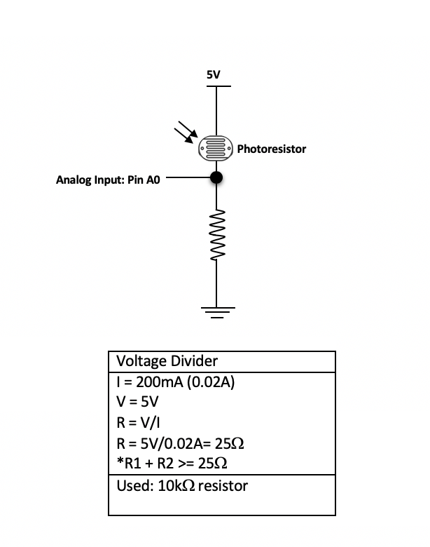
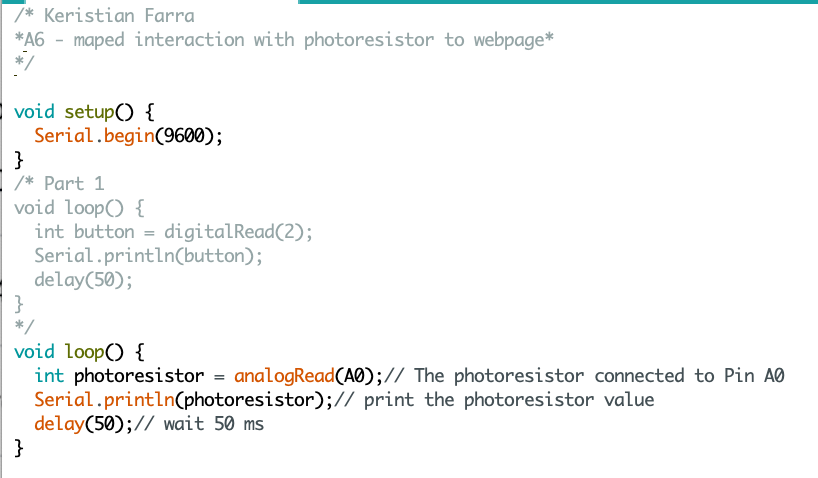
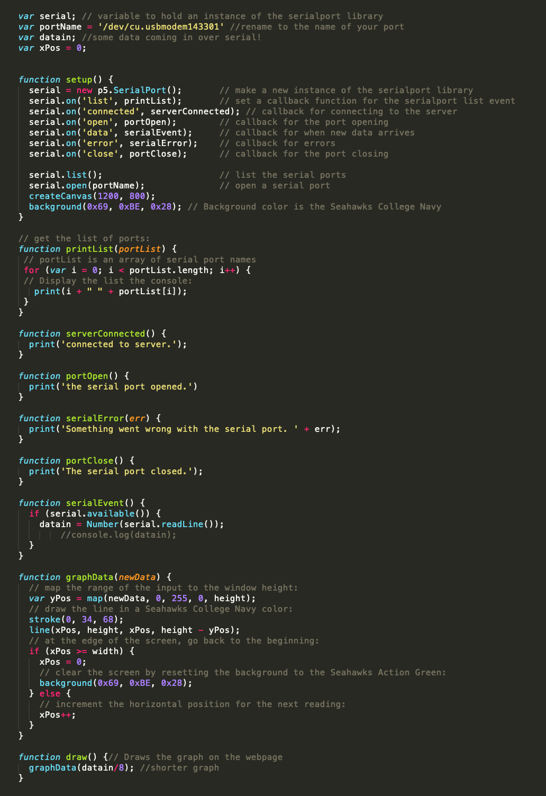

Assignment 6 : Datalogging!
Task
Create a webpage with p5.js that interacts with data that’s coming from your arduino over serial. Must use Serial.print and p5.js. The webpage must be interactive.
Demo
The circuit in action: Photoresistor Value Graphed

Circuit


Above is the circuit and it shows how it is set-up.
Schematic
Above is the schematic for this circuit. It shows how each part is connected. I utilized the breadboard to connect the parts with wires. I didn't have access to 1K or 2K ohms resistor so I used the lowest value [above 25 ohms], 10k ohms. It was safer and works.
Arduino Code
Above is the code I wrote for for the circuit.
JavaScript Code
Above is the code, I edited the graph and background color as well as decreased the height the of the graph to clearly see the that data that was being represented.